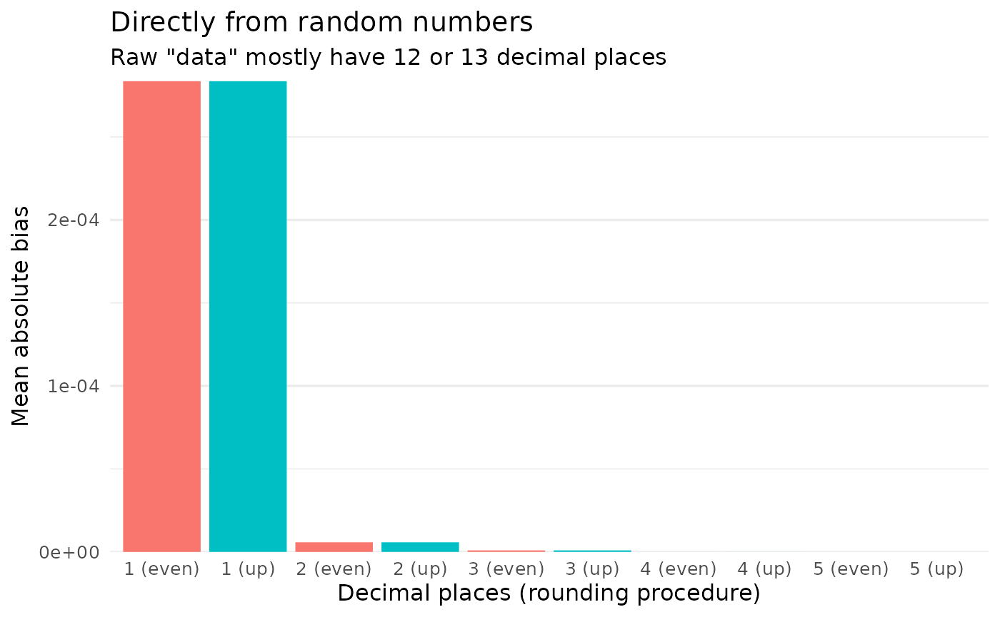
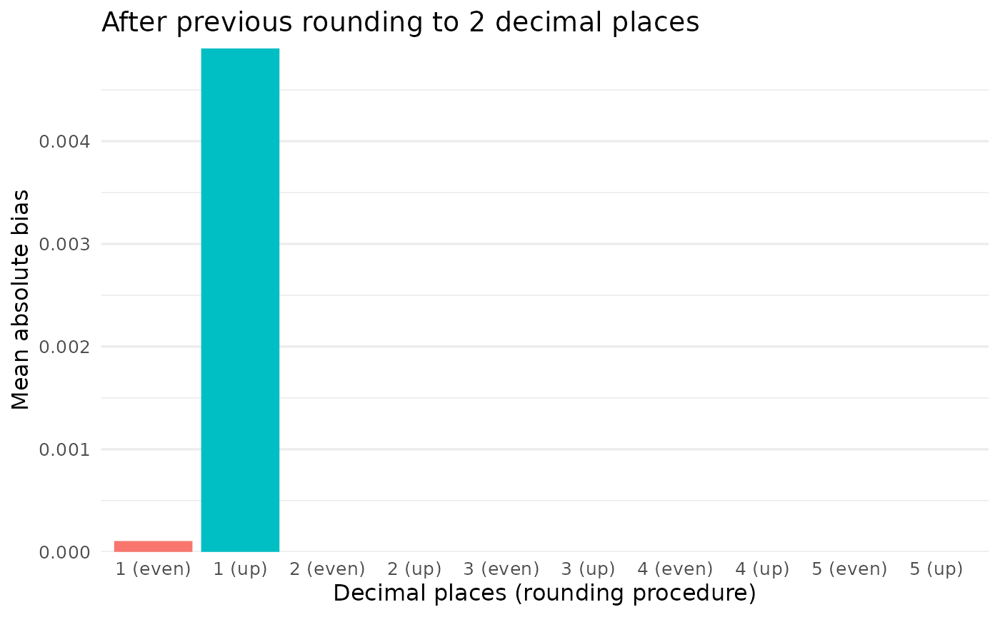

Large parts of scrutiny are about rounding. This topic is more diverse and variegated than one might think. “Rounding” is often taken to simply mean rounding up from 5, and although that’s wrong, it doesn’t make much of a difference most of the time. Where it does matter is in reconstructing the rounding procedures that others used, claim to have used, or are alleged to have used. In short, rounding and all its details matter for error detection.
This vignette covers scrutiny’s infrastructure for reconstructing rounding procedures and results from summary statistics. Doing so is essential for the package: It is a precondition for translating assumptions about the processes behind published summary data into a few simple, higher-level function calls. Some of the functions presented here might be useful beyond the package, as well. Feel free to skip the more theoretical parts if your focus is on the code.
Base R’s round() function is surprisingly sophisticated, which distinguishes it from the very simple ways in which decimal numbers are normally rounded — most of the time, rounding up from 5. For this very reason, however, it can’t be used to reconstruct the rounding procedures of other software programs. This is the job of scrutiny’s rounding functions.
First, I will present reround(), a general interface to reconstructing rounded numbers, before going through the individual rounding functions. I will add some comments on these.
I will also discuss unround(), which works the reverse way: It takes a rounded number and reconstructs the bounds of the original number, taking details about the assumed rounding procedure into account.
Finally, I will take a closer look at bias from rounding raw numbers.
reround()
None of the error detection techniques in scrutiny calls the individual rounding functions directly. Instead, all of them call reround(), which mediates between these two levels. reround() takes the vector of “raw” reconstructed numbers that were not yet rounded in the way that’s assumed to have been the original rounding procedure. Its next argument is decimals, the number of decimal places to round to.
The remaining three arguments are about the rounding procedure. Most of the time, only rounding will be of any interest. It takes a string with the name of one of the rounding procedures discussed below.
Here is an example for a reround() call:
The two remaining arguments are mostly forgettable: They only concern obscure cases of rounding with a threshold other than 5 (threshold) and rounding such that the absolute values of positive and negative numbers are the same (symmetric). Ignore them otherwise.
round_up() does what most people think of as rounding. If the decimal portion to be cut off by rounding is 5 or greater, it rounds up. Otherwise, it rounds down. SAS, SPSS, Stata, Matlab, and Excel use this procedure.
round_up(x = 1.24, digits = 1)
#> [1] 1.2
round_up(x = 1.25, digits = 1)
#> [1] 1.3
round_up(x = 1.25) # default for `digits` is 0
#> [1] 1Rounding up from 5 is actually a special case of round_up_from(), which can take any numeric threshold, not just 5:
round_up_from(x = 4.28, digits = 1, threshold = 9)
#> [1] 4.2
round_up_from(x = 4.28, digits = 1, threshold = 1)
#> [1] 4.3These two functions have their mirror images in round_down() and round_down_from(). Like round_down(), Python rounds down from 5. The arguments are the same as in round_up():
round_down(x = 1.24, digits = 1)
#> [1] 1.2
round_down(x = 1.25, digits = 1)
#> [1] 1.2
round_down(x = 1.25) # default for `digits` is 0
#> [1] 1round_down_from(), then, is just the reverse of round_up_from():
round_down_from(x = 4.28, digits = 1, threshold = 9)
#> [1] 4.3
round_down_from(x = 4.28, digits = 1, threshold = 1)
#> [1] 4.2Base R’s own rounding function is an outlier in statistical computing. base::round() doesn’t round up or down, or use any other procedure based solely on the removed part of the number. Instead, round() strives to round to the next even number. (This is also called “banker’s rounding”.)
Realizing that round() works in a highly unintuitive way sometimes leads to consternation. Why can’t we just round like we learned in school, that is, up from 5? The reason seems to be bias. Because 5 is right in between two whole numbers, any procedure that rounds 5 in some predetermined direction introduces a bias toward that direction. Rounding up from 5 is therefore biased upward, and rounding down from 5 is biased downward.
As shown in the Rounding bias section below, this is unlikely to be a major issue when rounding raw numbers that originally have many decimal places. It might be more serious, however, if the initial number of decimal places is low (for whatever reason) and the need for precision is high.
At least in theory, “rounding to even” is not biased in either direction, such that the mean of the rounded distribution is equal to the mean of the original distribution. That is how round() aims to operate. Here is a case in which it works out, whereas the bias of rounding up or down is fully apparent:
vec1 <- seq(from = 0.5, to = 9.5)
up1 <- round_up(vec1)
down1 <- round_down(vec1)
even1 <- round(vec1)
vec1
#> [1] 0.5 1.5 2.5 3.5 4.5 5.5 6.5 7.5 8.5 9.5
up1
#> [1] 1 2 3 4 5 6 7 8 9 10
down1
#> [1] 0 1 2 3 4 5 6 7 8 9
even1
#> [1] 0 2 2 4 4 6 6 8 8 10
# Original mean
mean(vec1)
#> [1] 5
# Means when rounding up or down: bias!
mean(up1)
#> [1] 5.5
mean(down1)
#> [1] 4.5
# Mean when rounding to even: no bias
mean(even1)
#> [1] 5A more formal take on this issue can be found below under Rounding bias.
However, this noble goal of unbiased rounding runs up against the reality of floating point computations. You might therefore get results from round() that first seem bizarre, or at least unpredictable. Consider:
vec2 <- seq(from = 4.5, to = 10.5)
up2 <- round_up(vec2)
down2 <- round_down(vec2)
even2 <- round(vec2)
vec1
#> [1] 0.5 1.5 2.5 3.5 4.5 5.5 6.5 7.5 8.5 9.5
up2
#> [1] 5 6 7 8 9 10 11
down2
#> [1] 4 5 6 7 8 9 10
even2 # No symmetry here...
#> [1] 4 6 6 8 8 10 10
mean(vec2)
#> [1] 7.5
mean(up2)
#> [1] 8
mean(down2)
#> [1] 7
mean(even2) # ... and the mean is biased downward!
#> [1] 7.428571
vec3 <- c(
1.05, 1.15, 1.25, 1.35, 1.45,
1.55, 1.65, 1.75, 1.85, 1.95
)
# This seems fine...
vec3 %>%
round(1)
#> [1] 1.0 1.1 1.2 1.4 1.4 1.6 1.6 1.8 1.9 2.0
# ...but this doesn't:
vec3 %>%
`+`(1) %>%
round(1)
#> [1] 2.0 2.1 2.2 2.4 2.5 2.5 2.6 2.8 2.9 3.0Sometimes round() behaves just as it should, but at other times, results can be hard to explain. Martin Mächler, who wrote the present version of round(), describes the issue about as follows (https://cran.r-project.org/web/packages/round/vignettes/Rounding.html):
The reason for the above behavior is that most decimal fractions can’t, in fact, be represented as double precision numbers. Even seemingly clean numbers with only a few decimal places come with an invisible mantissa, and are therefore closer to one side or the other. Rounding to even in R, while ostensibly about breaking the tie that occurs at 5, is actually much more about measuring which of the two sides is closer to the number to be rounded.
This seems better than going with mathematical intuitions that sometimes may have little relation to the way computers actually deal with these issues. R has been using the present solution since version 4.0.0.
In effect, base::round() is a black box, but it seems to be unbiased in the long run. I recommend using round() for original work — even though it is quite different from other rounding procedures, and therefore unsuitable to reconstructing them. Instead, we need something like scrutiny’s round_* functions.
unround()
Rounding deletes information. The mantissa is cut off in part or in full, and the resulting number is underdetermined with respect to the original number: The latter can’t be inferred from the former. It might be of interest, however, to compute the range of the original number given the rounded number (especially the number of decimal places to which it was rounded) and the presumed rounding method.
While it’s often easy to infer such a range, it might also be also useful to have a general function to use as a helper in another function for analyzing reported numbers. That function is unround(). It returns the lower and upper bounds, and it says whether these bounds are inclusive or not — something that varies greatly by rounding procedure. Currently, unround() is used as a helper within scrutiny’s DEBIT implementation; see vignette("debit").
The default rounding procedure for unround() is "up_or_down":
unround(x = "8.0")
#> # A tibble: 1 × 7
#> range rounding lower incl_lower x incl_upper upper
#> <chr> <chr> <dbl> <lgl> <chr> <lgl> <dbl>
#> 1 7.95 <= x(8.0) <= 8.05 up_or_down 7.95 TRUE 8.0 TRUE 8.05For a complete list of featured rounding procedures, see documentation for unround(), section Rounding.
On the left, the range column displays a pithy graphical overview of the other columns (except for rounding) in the same order:
lower is the lower bound for the original number.incl_lower is TRUE if the lower bound is inclusive and FALSE otherwise.x is the input value.incl_upper is TRUE if the upper bound is inclusive and FALSE otherwise.upper is the upper bound for the original number.By default, decimal places are counted internally so that the function always operates on the appropriate decimal level. This creates a need to take trailing zeros into account, which is why x needs to be a string:
unround(x = "3.50", rounding = "up")
#> # A tibble: 1 × 7
#> range rounding lower incl_lower x incl_upper upper
#> <chr> <chr> <dbl> <lgl> <chr> <lgl> <dbl>
#> 1 3.495 <= x(3.50) < 3.505 up 3.50 TRUE 3.50 FALSE 3.50Alternatively, a function that uses unround() as a helper might count decimal places by itself (i.e., by internally calling decimal_places()). It should then pass these numbers to unround() via the decimals argument instead of letting it redundantly count decimal places a second time.
In this case, x can be numeric because trailing zeros are no longer needed. (That, in turn, is because the responsibility to count decimal places in number-strings rather than numeric values shifts from unround() to the higher-level function.)
The following call returns the exact same tibble as above:
unround(x = 3.5, decimals = 2, rounding = "up")
#> # A tibble: 1 × 7
#> range rounding lower incl_lower x incl_upper upper
#> <chr> <chr> <dbl> <lgl> <dbl> <lgl> <dbl>
#> 1 3.495 <= x(3.5) < 3.505 up 3.50 TRUE 3.5 FALSE 3.50Since x is vectorized, you might test several reported numbers at once:
vec2 <- c(2, 3.1, 3.5) %>%
restore_zeros()
vec2 # `restore_zeros()` returns "2.0" for 2
#> [1] "2.0" "3.1" "3.5"
vec2 %>%
unround(rounding = "even")
#> ℹ 3 values unrounded:
#> # A tibble: 3 × 7
#> range rounding lower incl_lower x incl_upper upper
#> <chr> <chr> <dbl> <lgl> <chr> <lgl> <dbl>
#> 1 1.95 < x(2.0) < 2.05 even 1.95 FALSE 2.0 FALSE 2.05
#> 2 3.05 < x(3.1) < 3.15 even 3.05 FALSE 3.1 FALSE 3.15
#> 3 3.45 < x(3.5) < 3.55 even 3.45 FALSE 3.5 FALSE 3.55I wrote above that rounding up or down from 5 is biased. However, this points to a wider problem: It is true of any rounding procedure that doesn’t take active precautions against such bias. base::round() does, and that is why I recommend it for original work (as opposed to reconstruction).
It might be useful to have a general and flexible way to quantify how far rounding biases a distribution, as compared to how it looked like before rounding. The function rounding_bias() fulfills this role. It is a wrapper around reround(), so it can access any rounding procedure that reround() can, and takes all of the same arguments. However, the default for rounding is "up" instead of "up_or_down" because rounding_bias() only makes sense with single rounding procedures.
In general, bias due to rounding is computed by subtracting the original distribution from the rounded one:
\[ bias = x_{rounded} - x \]
By default, the mean is computed to reduce the bias to a single data point:
vec3 <- seq(from = 0.6, to = 0.7, by = 0.01)
vec3
#> [1] 0.60 0.61 0.62 0.63 0.64 0.65 0.66 0.67 0.68 0.69 0.70
# The mean before rounding...
mean(vec3)
#> [1] 0.65
# ...is not the same as afterwards...
mean(round_up(vec3))
#> [1] 1
# ...and the difference is bias:
rounding_bias(x = vec3, decimals = 0, rounding = "up")
#> [1] 0.35Set mean to FALSE to return the whole vector of individual biases instead:
rounding_bias(x = vec3, decimals = 0, rounding = "up", mean = FALSE)
#> [1] 0.40 0.39 0.38 0.37 0.36 0.35 0.34 0.33 0.32 0.31 0.30Admittedly, this example is somewhat overdramatic. Here is a rather harmless one:
vec4 <- rnorm(50000, 100, 15)
rounding_bias(vec4, decimals = 2)
#> [1] -1.1402e-05What is responsible for such a difference? It seems to be (1) the sample size and (2) the number of decimal places to which the vector is rounded. The rounding method doesn’t appear to matter if numbers with many decimal places are rounded:
up_1 <- rounding_bias(vec4, decimals = 1, rounding = "up")
up_2 <- rounding_bias(vec4, decimals = 2, rounding = "up")
up_3 <- rounding_bias(vec4, decimals = 3, rounding = "up")
up_4 <- rounding_bias(vec4, decimals = 4, rounding = "up")
up_5 <- rounding_bias(vec4, decimals = 5, rounding = "up")
even_1 <- rounding_bias(vec4, decimals = 1, rounding = "even")
even_2 <- rounding_bias(vec4, decimals = 2, rounding = "even")
even_3 <- rounding_bias(vec4, decimals = 3, rounding = "even")
even_4 <- rounding_bias(vec4, decimals = 4, rounding = "even")
even_5 <- rounding_bias(vec4, decimals = 5, rounding = "even")
bias <- abs(c(
up_1, up_2, up_3, up_4, up_5,
even_1, even_2, even_3, even_4, even_5
))
dp <- rep(1:5, 2)
rounding <- c(rep("(up)", 5), rep("(even)", 5))
dp <- paste(dp, rounding)
df <- tibble::tibble(bias, dp, rounding)
# Display simulated data:
df
#> # A tibble: 10 × 3
#> bias dp rounding
#> <dbl> <chr> <chr>
#> 1 0.000128 1 (up) (up)
#> 2 0.0000114 2 (up) (up)
#> 3 0.000000318 3 (up) (up)
#> 4 0.0000000200 4 (up) (up)
#> 5 0.0000000196 5 (up) (up)
#> 6 0.000128 1 (even) (even)
#> 7 0.0000114 2 (even) (even)
#> 8 0.000000318 3 (even) (even)
#> 9 0.0000000200 4 (even) (even)
#> 10 0.0000000196 5 (even) (even)
`%+replace%` <- ggplot2::`%+replace%`
# Set ggplot2 theme for the remaining part of the session:
ggplot2::theme_minimal(base_size = 12) %+replace%
ggplot2::theme(
panel.grid.major.x = ggplot2::element_blank(),
panel.grid.minor.x = ggplot2::element_blank(),
legend.position = "none"
) %>%
ggplot2::theme_set()
# Visualize:
ggplot2::ggplot(df, ggplot2::aes(x = dp, y = bias,
fill = rounding)) +
ggplot2::geom_col(ggplot2::aes(fill = rounding)) +
ggplot2::scale_y_continuous(expand = ggplot2::expansion(add = c(0, 0))
# labels = scales::comma
) +
ggplot2::scale_fill_discrete(name = "Rounding") +
ggplot2::labs(
x = "Decimal places (rounding procedure)",
y = "Mean absolute bias",
title = "Directly from random numbers",
subtitle = "Raw \"data\" mostly have 12 or 13 decimal places "
)
However, if the raw values are preliminarily rounded to 2 decimal places before rounding proceeds as above, the picture is different.1 I will spare you the code this time:
#> # A tibble: 10 × 3
#> bias dp rounding
#> <dbl> <chr> <chr>
#> 1 0.00508 1 (up) (up)
#> 2 0 2 (up) (up)
#> 3 0 3 (up) (up)
#> 4 0 4 (up) (up)
#> 5 0 5 (up) (up)
#> 6 0.0000970 1 (even) (even)
#> 7 0 2 (even) (even)
#> 8 0 3 (even) (even)
#> 9 0 4 (even) (even)
#> 10 0 5 (even) (even)
In sum, the function allows users to quantify the degree to which rounding biases a distribution, so that they can assess the relative merits of different rounding procedures. This is partly to sensitize readers to potential bias in edge cases, but also to enable them to make informed rounding decisions on their own.
I would be amiss here not to mention RIVETS, an error detection technique that calculates the probability that a given set of rounded summaries of statistical tests was derived from standard computing procedures. In particular, RIVETS allows probabilistic assessments of the hypothesis that the numbers were directly generated from raw data rather than from values already rounded before the test.
Rounding bias might conceivably show some relevance to RIVETS. However, this technique is designed for situations in which no raw data are available, and a role for considerations of bias does not seem obvious at present.↩︎